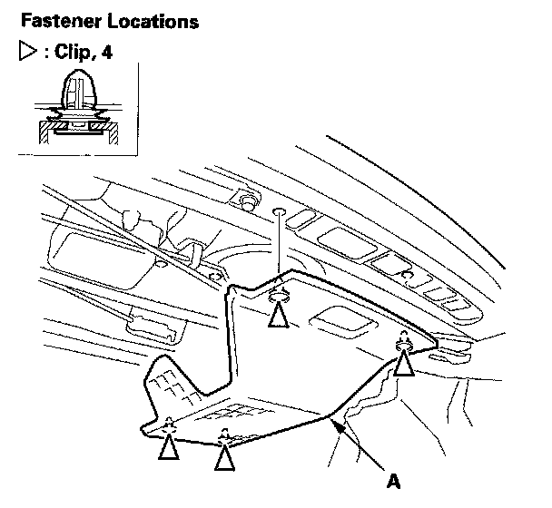
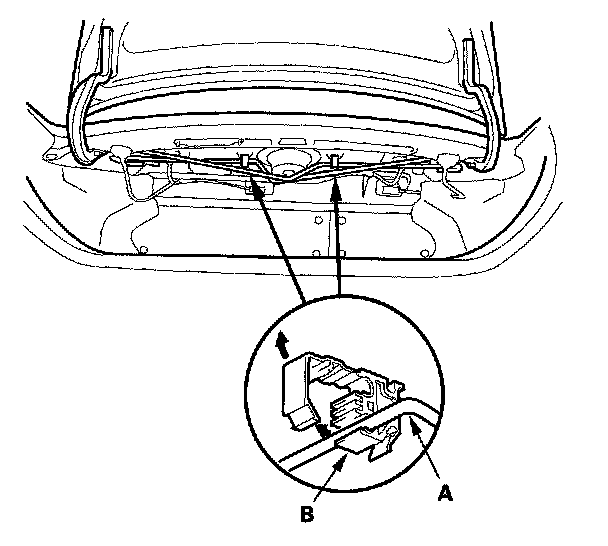
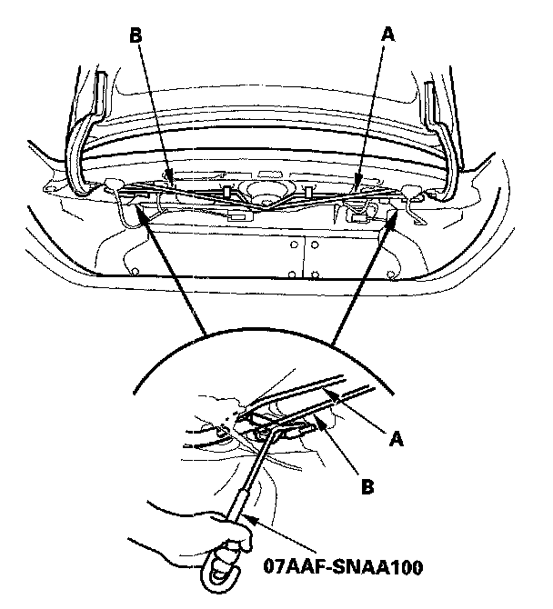
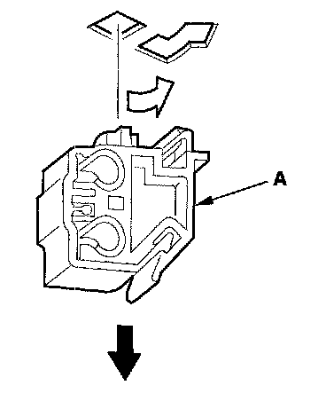
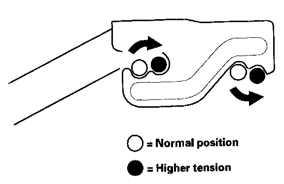
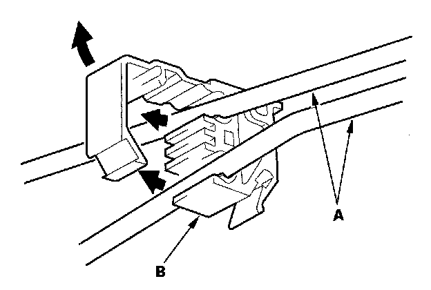
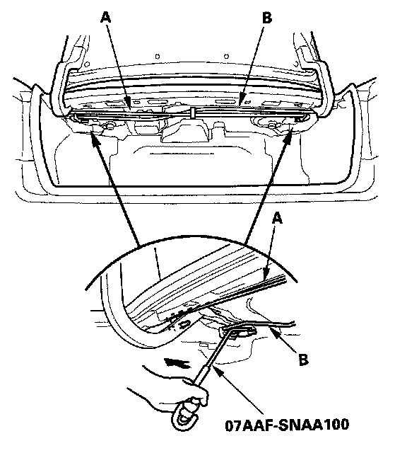
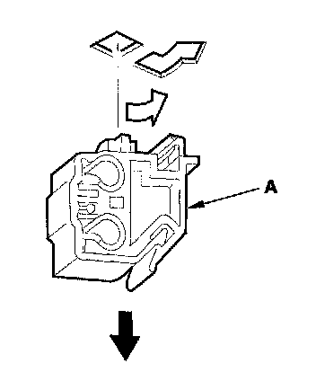
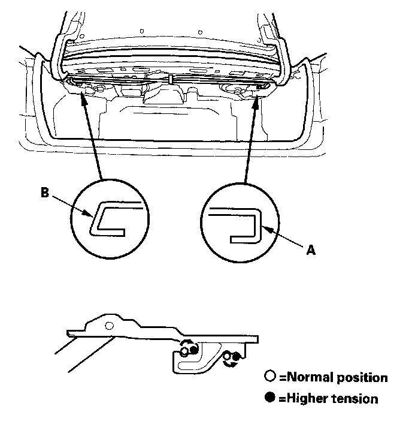

Trunk / Liftgate Spring: Service and Repair
Trunk Lid Torsion Bar ReplacementSpecial Tools Required
Torsion bar assembly tool O7AAF-SNAA100
2-door

1. Remove the clips, then remove the torsion bar cover (A).

2. Remove the torsion bars (A) from the torsion bar clips (B).

3. Put on gloves to protect your hands. Remove the torsion bars with the torsion bar assembly tool from both trunk lid hinges. First remove the left torsion bar (A), then remove the right torsion bar (B).

4. Remove the torsion bar clips (A) from the body.

5. Install the torsion bars in the reverse order of removal, and note these items:
- Adjust the torsion bars forward or rearward with the torsion bar assembly tool.
- Positions where each torsion bar was installed in the factory are following:
- Left torsion bar: Normal position
- Right torsion bar: Normal position
- Make sure the trunk lid opens properly and locks securely.
Special Tools Required
Torsion bar assembly tool O7AAF-SNAA100
4-door

1. Remove the torsion bars (A) from the torsion bar center clip (B).

2. Put on gloves to protect your hands. Remove the torsion bars with the torsion bar assembly tool from both trunk lid hinges. First remove the left torsion bar (A), then remove the right torsion bar (B).

3. Remove the torsion bar center clip (A) from the body.

4. Install the torsion bars in the reverse order of removal, and note these items:
- The shapes of the right torsion bar (A) and left torsion bar (B) are shown. Install the torsion bars properly.
- Adjust the torsion bars forward or rearward with the torsion bar assembly tool.
- Positions where each torsion bar was installed in the factory are following:
- Left torsion bar: Normal position
- Right torsion bar: Normal position
- Make sure the trunk lid opens properly and locks securely.